Хлебопечь BORK X780
Особенности
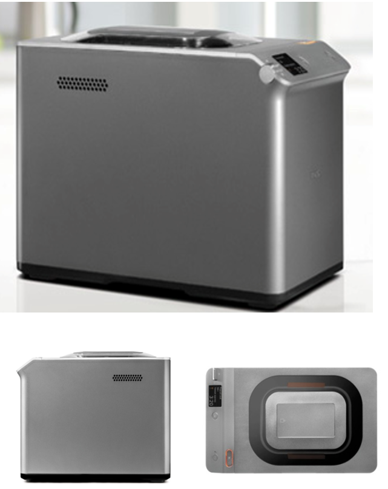- Первая хлебопечь с голосовым гидом
- 2 литые алюминиевые формы для выпечки
- Диспенсер для дополнительных ингредиентов
- Собственный рецепт «домашний хлеб»
- Режим медленного приготовления
Устройство
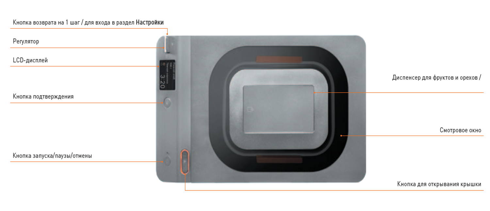 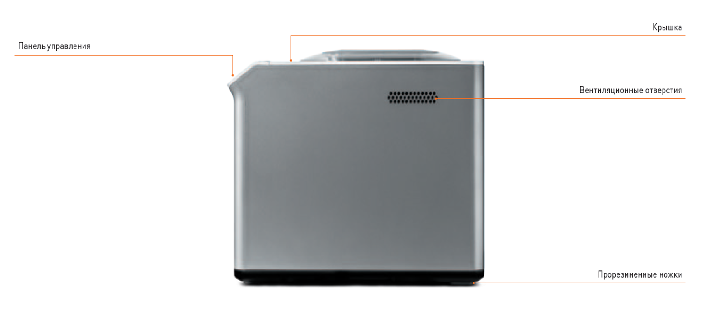Комплектация
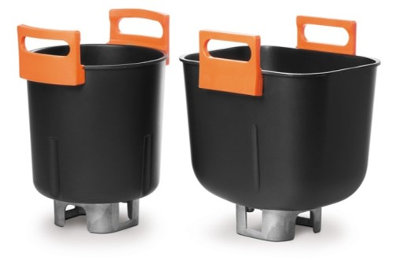- Круглая форма для выпечки: 1 шт.
- Прямоугольная форма для выпечки: 1 шт.
- Лопасть для джема: 1 шт.
- Лопасть для теста: 1 шт.
- Крючок для извлечения лопасти: 1 шт.
- Мерный стакан (450 мл): 1 шт.
- Мерная ложка: 1 шт.
2 литые алюминиевые формы для выпечки
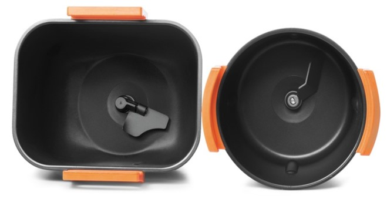Хлебопечь оснащена 2-мя формами для выпечки из литого алюминия, которые позволяют готовить не только хлеб традиционной формы, но и настоящие куличи, круглые и пышные.
Преимущества литых алюминиевых форм: утолщенные стенки исключают любой тип деформации (от перегрева, падения, долгого использования), обеспечивают равномерный прогрев, благодаря высокой теплопроводности и долговечность антипригарного покрытия.
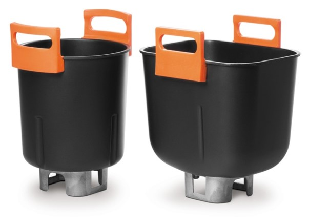Силиконовые ручки для удобного извлечения готового хлеба выдерживают высокие температуры внутри камеры.
Диспенсер для дополнительных ингредиентов
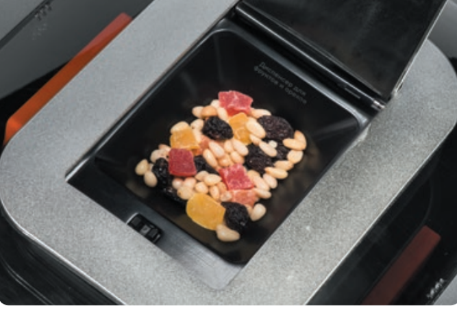Для дополнительного удобства в хлебопечь встроен диспенсер, с помощью которого устройство автоматически загружает в тесто дополнительные ингредиенты (изюм, орехи, сухофрукты, шоколадную крошку).
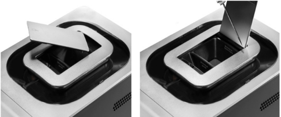Чистка диспенсера. Откройте крышку диспенсера под углом 90°, нажав на иконку. Установите отвертку в паз и подденьте штифт влево по направлению стрелки. Снимите крышку, опустив ее вниз.
Информативный LCD-дисплей
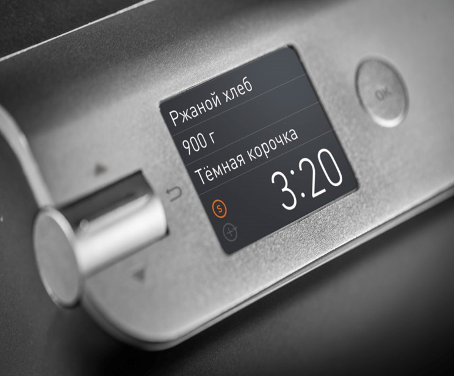Отражает текущие процессы работы хлебопечи: режим, информационные сообщения и другое. Поддерживает 2 языка: русский и английский.
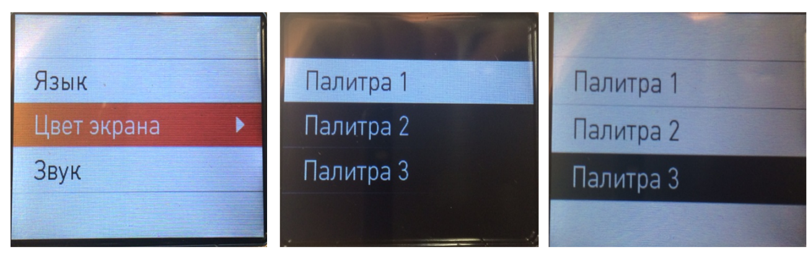3 Палитры экранного меню
17 автоматических программ
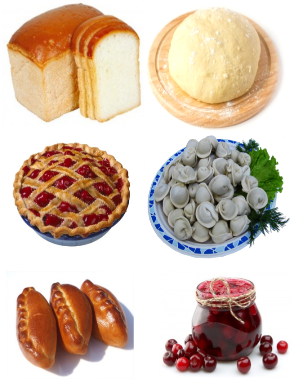Позволяют готовить самые разнообразные виды хлеба, теста и джема:
- Основной режим
- Основной режим — медленное приготовление
- Ржаной хлеб
- Ржаной хлеб — медленное приготовление
- Французская выпечка
- Французская выпечка — медленное приготовление
- Цельнозерновой хлеб
- Цельнозерновой хлеб — медленное приготовление
- Сладкая выпечка
- Сладкая выпечка — медленное приготовление
- Быстрая выпечка
- Хлеб без глютена
- Кулич
- Домашний хлеб
- Тесто
- Тесто для пасты
- Йогурт
- Ряженка
- Джем15
- Выпекание
Режим медленного приготовления
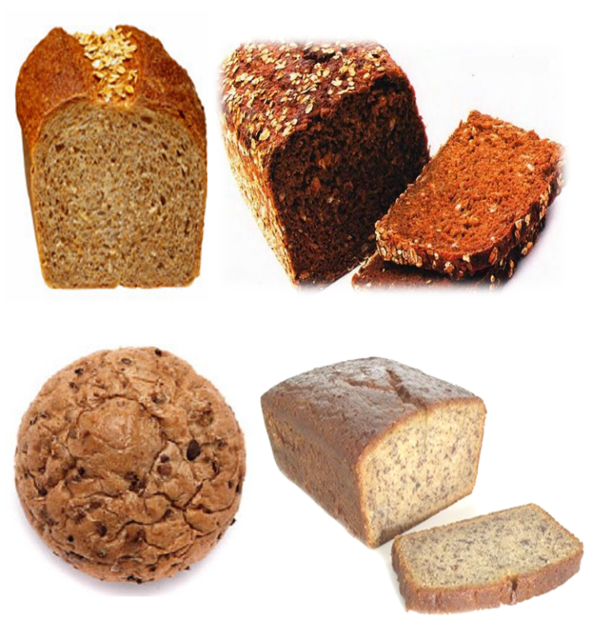Режим медленного приготовления дает возможность выпекать хлеб из муки грубого помола на основе традиционных рецептов, в том числе с использованием домашней закваски. По мнению диетологов, такой хлеб является самым полезным.
Выпечка такого хлеба требует увеличения времени расстойки и подъема теста, что и реализуется в данном режиме. Это гарантирует более качественное пропекание и более правильную форму, цвет и вкус.
Собственный рецепт «домашний хлеб»
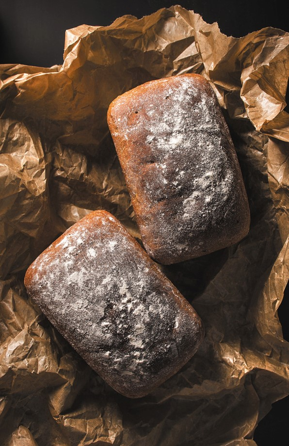Благодаря программе ≪Домашний хлеб≫ можно фантазировать и делать эксклюзивную выпечку по собственному рецепту
Режим позволяет изменить время каждого цикла:
- Время нагрева (0—0:20)
- Замес (0—0:30)
- Расстойка (0—0:30)
- Замес (0—0:30)
- Подъем (0—1:30)
- Выпекание (0—1:30)
- Подогрев (0—1:00)
Оригинальный мерный стакан c мерной ложкой
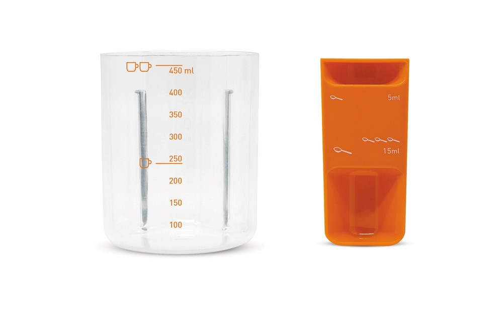Режим энергосбережения
Хлебопечь автоматически переходит в режим энергосбережения через 3 минуты.Для выхода из режима энергосбережения нажмите любую кнопку прибора.
Технические характеристики
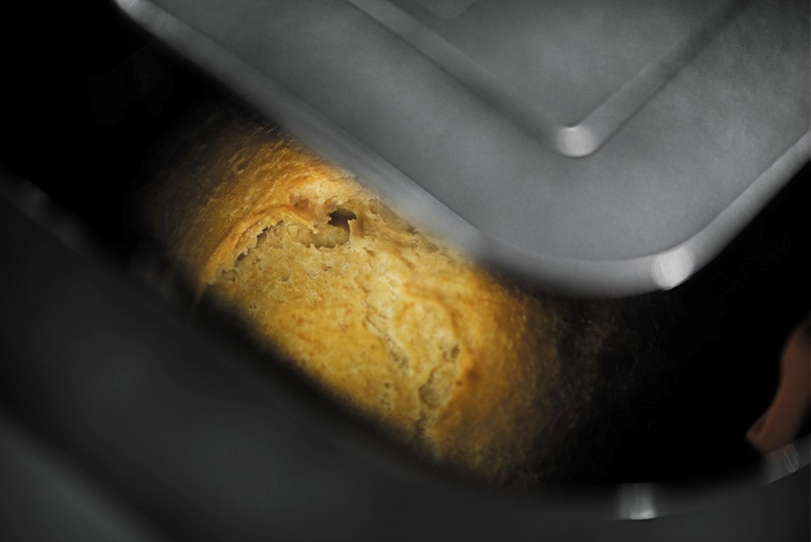
Напряжение: 220–240 В
Частота: 50–60 Гц
Мощность: 520 Вт
17 программ
Диспенсер
2 формы для выпекания
Вес выпечки: 500, 750 и 900 г
Отложенный старт: до 15 ч.
Габариты (В×Ш×Г): 307×240×398 мм
Вес: 7,65 кг
Сделано в Китае
Аргументы для продажи
- Первая хлебопечь с голосовым гидом
- Две литые алюминиевые формы для выпечки
- Две металлические лопасти для замешивания теста и джема
- Диспенсера для дополнительных ингредиентов
- Информативный LCD-дисплей
- Два языка: русский, английский
- Три палитры экранного меню
- 16 автоматических программ
- Собственный рецепт «домашний хлеб»
- Режимы медленного приготовления
- Оригинальный мерный стакан с мерной ложкой
- Режим энергосбережения
- Плавное открывание крышки с помощью клавиши: электронное и механическое
- Функция отложенного старта
- Три варианта веса готовой выпечки и три цвета корочки
- Подсветка камеры печи
Хлебопечь BORK X800
Особенности
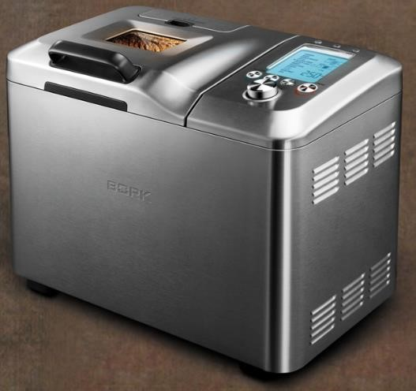- 14 автоматических режимов, 9 программируемых режимов
- 4 размера готовой выпечки
- Функция отложенного старта
- Диспенсер для автоматического добавления ингредиентов
- Универсальная складная лопасть
Устройство
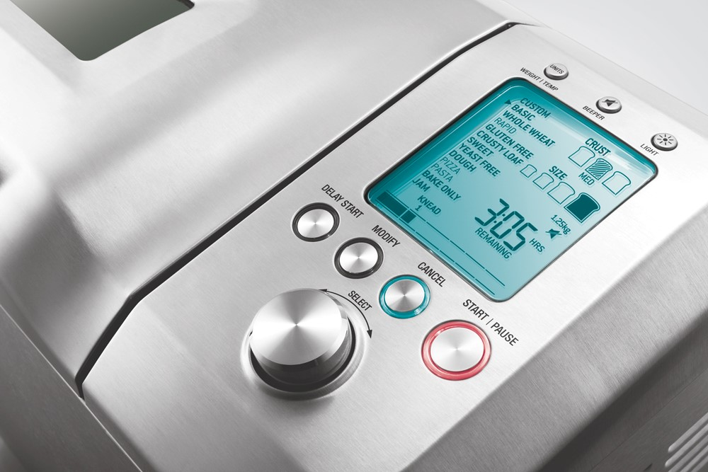- Кнопка конвертации единиц измерения веса и температуры — WEIGHT | TEMP (нажмите кнопку для конвертации граммов в фунты и градусов Цельсия (°С) в градусы Фаренгейта (°F))
- Кнопка включения / выключения звукового сигнала — BEEPER
- Кнопка включения / выключения освещения — LIGHT (нажмите и удерживайте кнопку, чтобы включить внутреннее освещение камеры)
- Кнопка функции отложенного старта — DELAY START (нажмите кнопку, чтобы установить время, через которое хлеб должен быть готов)
- Кнопка изменения параметров приготовления—MODIFY
- Кнопка отменыприготовления — CANCEL (нажмите кнопку для возврата в главное меню перед началом цикла или нажмите и удерживайте кнопку для отмены приготовления)
- Кнопка начала / прерывания приготовления — START | PAUSE (нажмите кнопку START | PAUSE для начала приготовления или нажмите и удерживайте кнопку START | PAUSE для прерывания приготовления, при повторном нажатии процесс приготовления возобновится)
- Функцию паузы нельзя выбрать во время режима подогрева — KEEP WARM
- Регулятор выбора—SELECT (выбор программ, цвета корочки, веса, времени) (вращайте регулятор для выбора настроек и нажмите для подтверждения выбора)
4 размера готовой выпечки
Вы можете выбрать 1 из 4 вариантов веса буханки хлеба: 500, 750, 1000 или 1250 г.
3 варианта цвета корочки
- LIGHT—светлый
- MED—средний
- DARK—темный
Отсчёт времени на Дисплее
Функция подогрева Keep worm – прямой отсчёт времени. Функция отложенного старта Delay start – обратный отсчёт времени.
Шкала этапов приготовления отображает время работы на каждом из этапов.
- PREHEAT — предварительный нагрев
- KNEAD — замес
- RISE — подъем
- PUNCH DOWN — обминка
- BAKE — выпекание
- KEEP WARM — подогрев
- READY IN — индикация работы функции отложенного старта
- REMAINING — индикация отсчета времени
2 вида лопастей для замешивания
В комплекте с хлебопечью поставляются 2 лопасти для замешивания.
Универсальная складная лопасть
Используется во всех режимах для приготовления хлеба и теста. Перед стадией выпекания переводится в горизонтальное положение, чтобы свести к минимуму размер отверстия в основании буханки. В конце приготовления лопасть не требуется извлекать из хлеба.
Лопасть для джема
Идеально подходит для приготовления джема и варенья, так как позволяет непрерывно перемешивать ингредиенты.
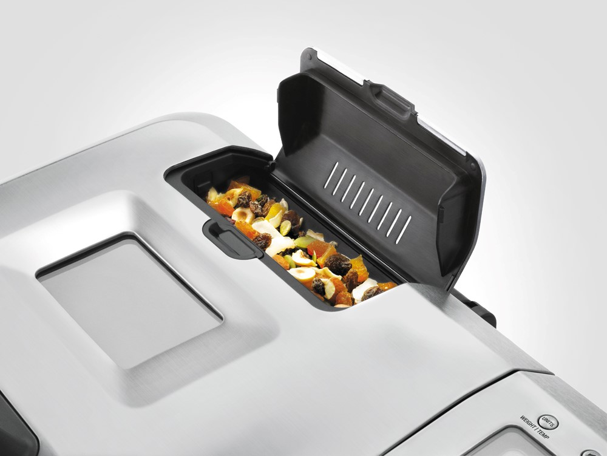Диспенсер для автоматического добавления ингредиентов
Позволяет добавлять в хлеб дополнительные ингредиенты в нужное время. Засыпьте в диспенсер орехи, зерна, кусочки фруктов или шоколадную крошку и создайте собственный кулинарный шедевр.
14 автоматических режимов

- CUSTOM—программируемый режим
- BASIC—основной режим
- BASIC RAPID—основной ускоренный режим
- WHOLE WHEAT—пшеничный цельнозерновой хлеб
- WHOLE WHEAT RAPID—пшеничный цельнозерновой хлеб, ускоренный режим
- GLUTEN FREE—хлеб без клейковины
- CRUSTY LOAF—хрустящая булочка
- SWEET—сладкая выпечка
- YEAST FREE—бездрожжевой хлеб
- DOUGH—тесто
- DOUGH PIZZA—тесто для пиццы
- DOUGH PASTA—тесто для пасты
- BAKE ONLY—только выпечка
- JAM—джем
Функция изменения параметров приготовления — MODIFY
Эта функция позволяет менять параметры приготовления в автоматических режимах. Возможно изменить настройки температуры и времени приготовления на этапах PREHEAT (предварительный нагрев), KNEAD (замешивание теста), RISE (подъем), PUNCH DOWN (обминка), BAKE (выпекание) и KEEP WARM (подогрев).
- Для изменения параметров приготовления выберите желаемый режим приготовления, цвет корочки и размер буханки
- Нажмите кнопку MODIFY. На дисплее начнет мигать индикация этапа приготовления, настройки которого вы можете изменить
- Используйте регулятор SELECT для введения новых настроек
- Для начала приготовления нажмите кнопку START | PAUSE
При следующем включении новые настройки не сохранятся.
Функция «память»
При внезапном отключении электроэнергии активируется функция «память», которая позволяет возобновить прерванный цикл автоматически, не начиная приготовление с самого начала.
Примечание. Функция «память» включится, если хлебопечь проработала не менее 5 минут, а электропитание было восстановлено в течение 60 минут.
Индикация перегрева
Между окончанием предыдущего приготовления и началом следующего хлебопечь должна остыть в течение часа с открытой крышкой. При перегреве камеры хлебопечи на дисплее появятся символы ---H или -H.
Функция отложенного старта
Функция отложенного старта позволяет приготовить выпечку к желаемому времени. Время, к которому приготовление должно завершиться, программируется с отсрочкой до 13 часов (в зависимости от программы, на которой ставим отсрочку).
Используя эту функцию с сухими заменителями, сначала залейте в хлебную форму воду, затем добавьте муку и после этого – сухие заменители, чтобы они были отделены друг от друга.
9 программируемых режимов
Уникальная особенность хлебопечи — возможность запрограммировать от 1 до 9 режимов, используя свои собственные рецепты.
Рецепты сохраняются в памяти хлебопечи.
Функция подогрева — KEEP WARM
После завершения процесса приготовления хлебопечь автоматически переходит в режим подогрева и на дисплее появляется индикация Keep warm. Подогрев длится в течение 60 минут, после чего хлебопечь выключается. Чтобы отключить эту функцию нажмите и удерживайте CANCEL.